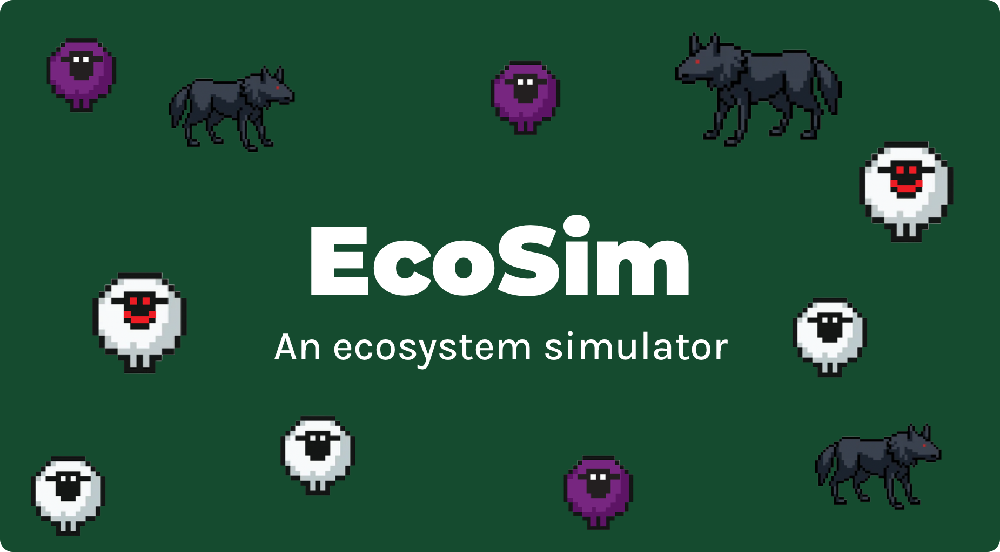

EcoSim: Dynamic Ecosystem Simulation

Introduction
EcoSim was my term project for 15-112: Fundamentals of Programming and Computer Science, the freshman intro course at Carnegie Mellon University. Over one month, I single-handedly ideated, designed, coded, and produced this simulation, including all assets and the demo video. With weekly mentorship meetings to track my progress, I successfully achieved the MVP (Minimum Viable Product) by the deadline, resulting in the version you see today.
About the Project
EcoSim is an interactive ecosystem simulation that dynamically evolves based on user-controlled parameters. Its features include:
- Live Parameter Adjustments: Modify variables like population size, mutation rates, and terrain features to instantly see their effects on the ecosystem.
- Genetic Mutations: Simulated creatures inherit traits with randomized mutations, showcasing evolution-like dynamics over time.
- Randomized Terrain Generation: Each simulation generates unique landscapes, adding diversity and unpredictability.
- Real-Time Visualization: Watch as populations adapt, grow, or decline based on environmental factors.
Key Features
One of the most engaging aspects of EcoSim is the ability to experiment with different settings and immediately observe how the virtual ecosystem reacts. For example:
- Increasing mutation rates might lead to unpredictable population booms or crashes.
- Adjusting terrain obstacles can force creatures to adapt to new challenges.
This hands-on interactivity makes EcoSim both educational and entertaining, providing insight into concepts like natural selection and ecological dynamics.
Reflection
Although EcoSim is not the most technically advanced project, it holds a special place in my heart as my first major solo project at Carnegie Mellon. It represents the culmination of a month’s worth of effort, creativity, and problem-solving. Looking back now, four years later, EcoSim reminds me of how far I’ve come as a computer scientist and how much I’ve learned since then.
One day, I hope to rebuild this project from the ground up using more advanced tools like Unity or Unreal Engine. Until then, EcoSim remains a cherished milestone in my journey as a software engineer.